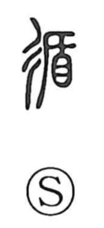

循

Uncategorized
Kun: shitagau, meguru | On: jun
to follow ・ to circulate ・ to go around
Explanation
A phono-semantic character: the step/road element signals movement along a path, while 盾 provides the sound jun and evokes the image of raising a shield to tour and inspect, acts associated with pacifying and guiding people. Classical glossaries group it with related graphs—such as 遹, which depicts a pike set up for patrol and coercive inspection, and 遵, which shows circling with a ritual wine vessel to lead worship—placing it in a semantic field of going around and making others follow. From this background, 循 comes to mean to follow or be led/attended, and by extension to circulate, to make the rounds.